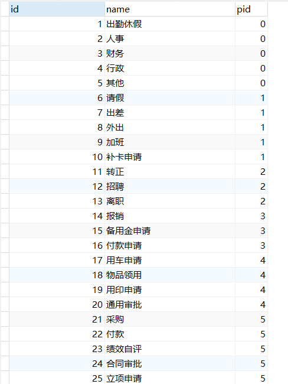
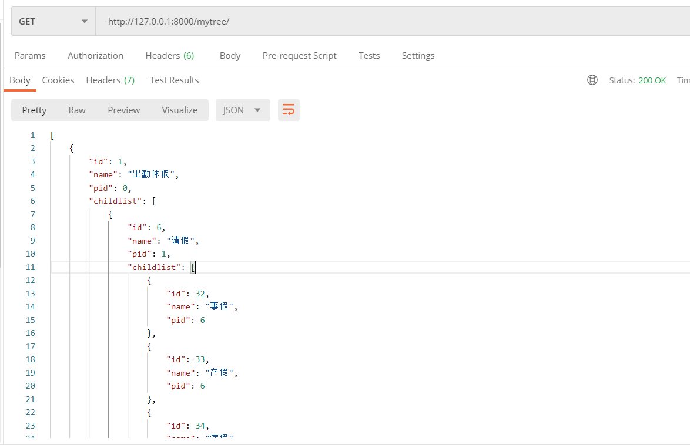
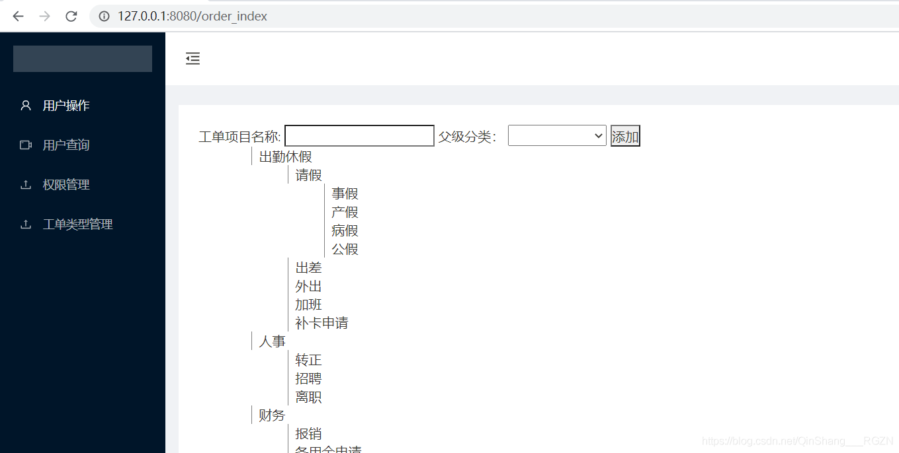

1.什么是无限级分类？
- 顾名思义，就是一级接一级的无限制分级。其实简单点说就是一个人类可以繁衍出多个后代，然后一个后代又可以分另外多个后代这样无限繁衍下去（举例：家族族谱），就好象linux系统你可以新建一个文件夹，然后在这个文件夹里又可以建一些个文件夹，在文件夹底下还可以建一些文件夹一样，随后使用tree命令就可以查看文件夹目录层级。那么这种层级结构也成为树结构在日常的开发需求里也是很常见的，比如淘宝商城系统的商品分类，课程的目录章节，以及论坛里的帖子回复等等*
好了，话不多说，上代码（我们以工单系统为例）！！！以下为后端代码：
首先，打开django项目中的models.py，新建一个类别的模型类，这里我们以最简单的parent_id的形式来建立（相当于自关联）
1
2
3
4
5
6
7
8
9class WorkOrder(models.Model):
name = models.CharField(max_length=50, verbose_name='分类名称')
pid = models.IntegerField(default=0, verbose_name='父类ID')
class Meta:
db_table = 'workorder'
def __str__(self):
return self.name因为我的项目是基于drf框架，所以需要一个序列化器：
1
2
3
4
5
6
7
8from rest_framework.serializers import ModelSerializer
from .models import *
class OrderSer(ModelSerializer):
class Meta:
model = WorkOrder
fields = '__all__'由于django序列化出来的类不具备层级结构，所以我们提前在views.py中写好一个用来递归的方法：
1
2
3
4
5
6
7
8
9
10
11
12
13
14
15
16
17
18
19
20def xTree(datas):
lists = []
tree = {}
parent_id = ''
for i in datas:
item = i
print(item)
tree[item['id']] = item
root = None
for i in datas:
obj = i
if not obj['pid']:
root = tree[obj['id']]
lists.append(root)
else:
parent_id = obj['pid']
if 'childlist' not in tree[parent_id]:
tree[parent_id]['childlist'] = []
tree[parent_id]['childlist'].append(tree[obj['id']])
return lists此时我们再写一个视图接口，从数据库中读取数据就可以了
1
2
3
4
5
6
7
8
9
10class MyTree(APIView):
def get(self, request):
# 获取订单列表
orderlist = WorkOrder.objects.all()
# 序列化
orderlist_ser = OrderSer(orderlist, many=True)
mylist = xTree(orderlist_ser.data)
# print(mylist)
return Response(mylist)最后为咱们的视图添加路由
1
2
3
4
5
6from userapp.views import *
urlpatterns = [
path('admin/', admin.site.urls),
path('mytree/', MyTree.as_view()),
]好了，以上就是我们后端的代码
然后我们向数据库添加测试数据

Postman测试后端接口：

perfect！！！
接下来我们再说说前端：
打开vue项目，封装一个WXJcate.vue递归组件
所谓递归组件: 就是组件可以在它们自己的模板中调用自身，不过它们只能通过 name 选项来做这件事，例如给组件设置属性 name: ‘WorkOrder.vue’，然后在模板中就可以使用 WorkOrder调用自己进行递归调用了
1 | <template> |
然后就可以在其他页面中调用这个递归组件
在order_Index.vue调用递归组件并请求后端的数据：
1 | <template> |
好了，现在咱们的前端也写好了，下面让我们看一下页面的效果吧：
